1PriceGuard란?
왜 만들었나
시술 가격표는 시술코드 · 시술명 · 부위 · 횟수 · 가격 · 이벤트 기간처럼 칸이 많습니다. 여러 사람이 고치고 합치다 보면 다음 같은 문제가 생깁니다.
- 같은 값이 다르게 적힘 —
500,000원(글자) 과500000(숫자),2026.10.14와2026-10-14,5번과5회 - 같은 행이 두 번 들어감
- 값이 빠짐 (빈칸)
- 이벤트가격이 정상가격보다 비싸거나, 종료일이 시작일보다 빠름
PriceGuard는 이런 문제를 정해진 정제 규칙 20개로 한 번에 검사합니다.
자동 수정과 검토 필요의 차이
| 구분 | 무엇을 하나 | 예 |
|---|---|---|
| 자동 수정 | 결과가 확실한 형식만 고칩니다. 고친 내용은 모두 변경 기록에 남습니다. | 500,000원 → 500000, 2026.10.14 → 2026-10-14, 5번 → 5회, 완전히 같은 중복 행 삭제 |
| 검토 필요 | 틀린 것 같지만 정답을 알 수 없는 값은 바꾸지 않고, 이유만 표시합니다. 사람이 확인해서 고칩니다. | 빈칸, 0원·음수 가격, 이벤트가 > 정상가, 종료일 < 시작일, 너무 튀는 가격 |
| 충돌 | 같은 시술코드인데 내용이 다른 행. 어느 쪽이 맞는지 알 수 없어 두 행 모두 남기고 표시합니다. | 같은 코드에 정상가격 220,000 / 260,000 |
지금의 한계
- 오류를 미리 넣어 둔 목업(가상) 데이터 한 파일로 만들고 검증했습니다. 실제 병의원 가격표에서도 같은 결과가 나온다고 보장하지 않습니다.
- 정해진 양식(필수 컬럼 10개)의 병의원 시술 가격표 전용입니다. 다른 표에는 쓸 수 없습니다.
- 정제 규칙은 고정되어 있고, 화면에서 규칙을 바꿀 수 없습니다.
- 가격 이상치 기준은 목업 데이터에 맞춘 임시 기준입니다.
- 최종 판단은 사람이 합니다. «검토 필요»로 남은 값은 직접 확인해야 합니다.
2시작 전에 확인할 것
PriceGuard는 아래 조건에 맞는 엑셀만 읽습니다. 올리기 전에 내 파일을 먼저 확인하세요.
| 조건 | 내용 |
|---|---|
| 파일 형식 | .xlsx · .xls · .xlsm (CSV는 올릴 수 없습니다) |
| 시트 | 첫 번째 시트만 검사합니다. 시트가 여러 개면 화면에 안내가 나옵니다. |
| 머리글 | 1행에 칸 이름이 있어야 합니다. 데이터는 2행부터입니다. |
| 필수 컬럼 | 아래 10개가 모두 있어야 합니다. 칸 순서는 달라도 됩니다. |
| 컬럼 이름 | 글자가 정확히 같아야 합니다. (앞뒤 공백은 괜찮지만, 중간 띄어쓰기나 글자가 다르면 못 찾습니다) |
필수 컬럼 10개
| # | 컬럼 이름 | 예시 값 (목업 데이터 첫 행) |
|---|---|---|
| 1 | 시술코드 | BTX-001 |
| 2 | 진료과목 | 피부과 |
| 3 | 시술분류 | 보톡스 |
| 4 | 시술명 | 국산 보톡스 이마 |
| 5 | 시술부위 | 이마 |
| 6 | 시술횟수 | 1회 |
| 7 | 정상가격 | 49000 |
| 8 | 이벤트가격 | 39000 |
| 9 | 이벤트시작일 | 2026-06-01 |
| 10 | 이벤트종료일 | 2026-06-21 |
- 위 10개 말고 다른 칸이 더 있어도 됩니다. 그 칸은 검사하지 않고, 화면에 «규칙에 없는 컬럼은 검사하지 않습니다» 안내가 나옵니다.
- 완전히 빈 행은 데이터로 세지 않습니다.
3서비스 접속하기
Python이나 별도 프로그램을 설치할 필요가 없습니다. 브라우저에서 아래 주소를 열면 끝입니다.
https://priceguard-cjy3363-9965.vercel.app
- 브라우저 탭 이름: PriceGuard | 병의원 시술 가격표 검증
- 왼쪽 위에 PriceGuard 로고, 가운데에 «가격표 업로드» 화면
- 오른쪽 위 배지: 정제 규칙 20개 준비됨
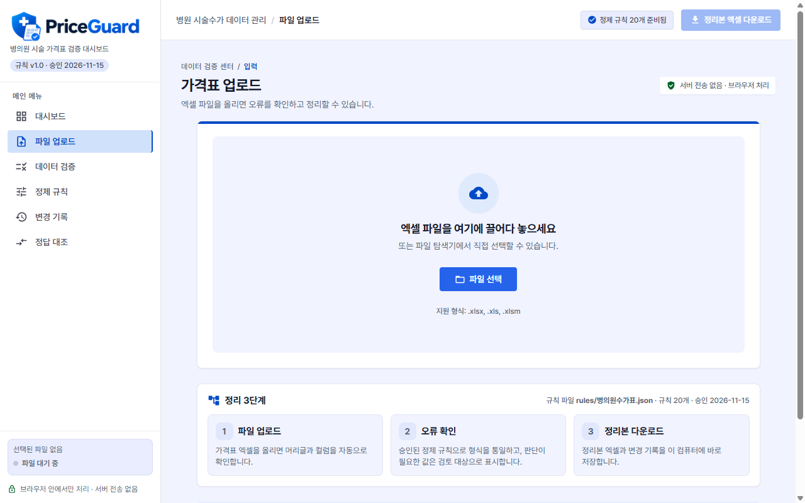
Windows의 Chrome에서 확인했습니다. Edge · Safari · Firefox, Mac에서는 직접 시험하지 않았습니다.
4화면 구성 알아보기
왼쪽 메뉴에 6개 화면이 있습니다. 휴대폰에서는 왼쪽 위 ☰ 단추를 눌러 메뉴를 엽니다.
| 메뉴 | 하는 일 |
|---|---|
| 대시보드 | 정제 결과를 한눈에 요약합니다. 자동 수정 · 검토 필요 · 중복 제거 수와 오류 유형별 건수. |
| 파일 업로드 | 엑셀 파일을 올리는 곳. 처음 접속하면 이 화면이 열립니다. |
| 데이터 검증 | 원본과 정리본을 표로 비교하고, 행마다 검토 사유를 봅니다. |
| 정제 규칙 | 규칙 20개의 내용과 이유, 실제로 적용된 건수를 봅니다. |
| 변경 기록 | 무엇이 어떻게 바뀌었는지 기록을 보고, 엑셀 파일 3종을 내려받습니다. |
| 정답 대조 | (선택) 정답 CSV와 정리본을 비교합니다. |
화면 위쪽에는 항상 규칙 상태 배지와 정리본 엑셀 다운로드 버튼이 있습니다. 파일을 올리기 전에는 다운로드 버튼이 흐리게 꺼져 있습니다. 왼쪽 메뉴 아래에는 지금 올린 파일 이름과 상태(파일 대기 중 / 정제 완료)가 나옵니다.
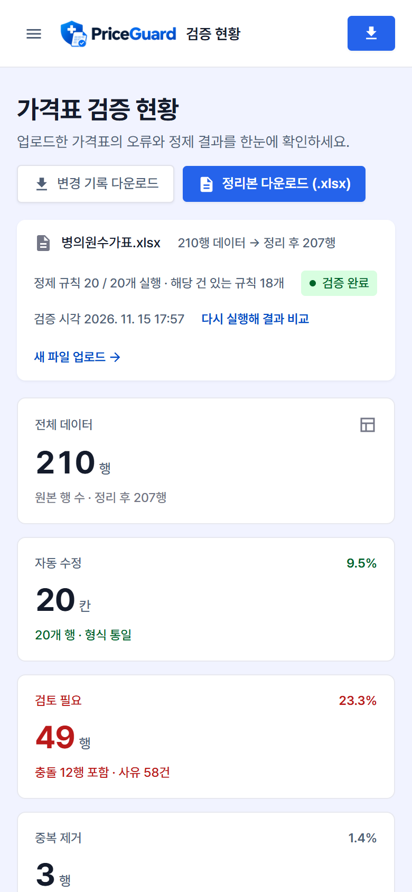
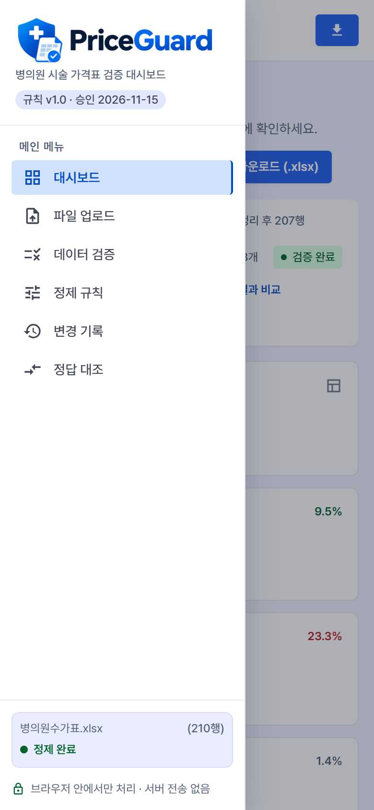
5엑셀 파일 올리기
- 왼쪽 메뉴에서 파일 업로드를 누릅니다.
- 엑셀 파일을 «엑셀 파일을 여기에 끌어다 놓으세요» 상자에 끌어다 놓거나, 파일 선택 을 눌러 고릅니다.
- 끝입니다. 별도의 «정리» 버튼은 없습니다. 파일을 올리면 정제가 자동으로 진행되고 대시보드로 이동합니다.
- 화면이 「대시보드」로 바뀌고, 파일 이름 옆에 검증 완료가 보입니다.
- 왼쪽 메뉴 아래가 정제 완료로 바뀝니다.
- 「파일 업로드」 화면으로 돌아가면 파일 정보 줄(시트 · 데이터 행 · 컬럼 수 · «정제 규칙 20개 적용 완료»)과 다른 파일 선택 결과 보기 → 버튼이 보입니다.
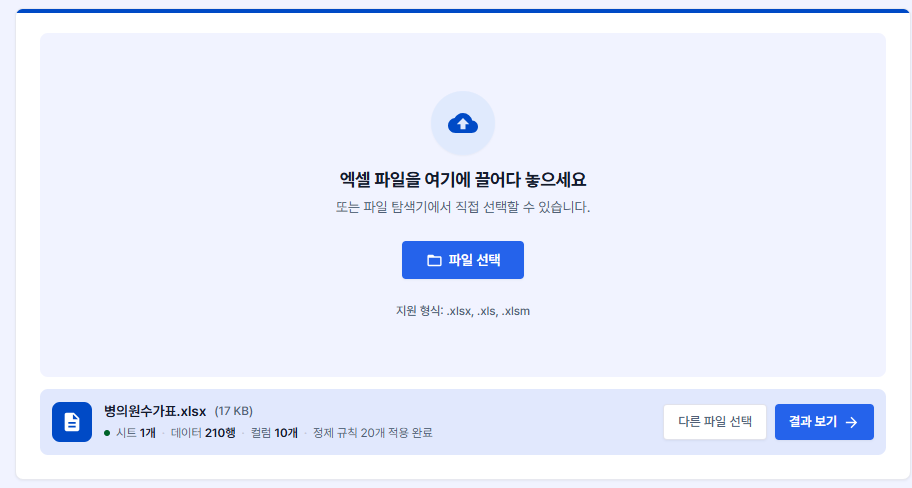
- 새 파일을 올리면 이전 결과(정답 대조 결과 포함)는 새 결과로 바뀝니다. 필요한 결과는 먼저 내려받으세요.
- 페이지를 새로 고치거나 닫으면 결과가 사라집니다. 서버에 저장하지 않기 때문입니다.
끌어다 놓기는 실제 마우스로는 시험하지 않았습니다(파일 선택 방식으로 확인). .xls · .xlsm은 받도록 되어 있지만 실제로 시험한 형식은 .xlsx입니다.
6대시보드 확인하기
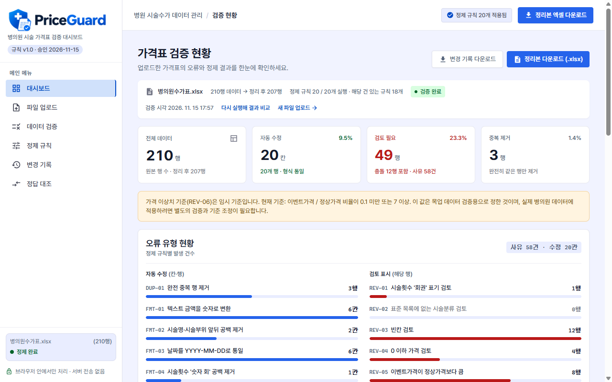
정제 결과 요약 (위쪽 카드 4개)
| 카드 | 뜻 | 목업 데이터 예시 |
|---|---|---|
| 전체 데이터 | 원본 행 수와 정리 후 행 수 | 210행 → 정리 후 207행 |
| 자동 수정 | 형식을 고친 칸 수 | 20칸 |
| 검토 필요 | 사람이 확인해야 하는 행 수 (충돌 포함) | 49행 (충돌 12행 포함) |
| 중복 제거 | 완전히 같아서 지운 행 수 | 3행 |
위 숫자는 가이드 작성에 쓴 목업(가상) 파일의 결과입니다. 내 파일에서는 다른 숫자가 나옵니다.
가격 이상치 임시 기준 안내 (노란 상자)
대시보드에는 항상 «가격 이상치 기준(REV-06)은 임시 기준입니다…» 안내가 나옵니다. 지금 기준은 이벤트가격 ÷ 정상가격 비율이 0.1 미만 또는 7 이상이며, 목업 데이터에 맞춘 값이라 실제 데이터에는 별도 검증과 조정이 필요합니다.
오류 유형 현황 · 검토 권장 항목
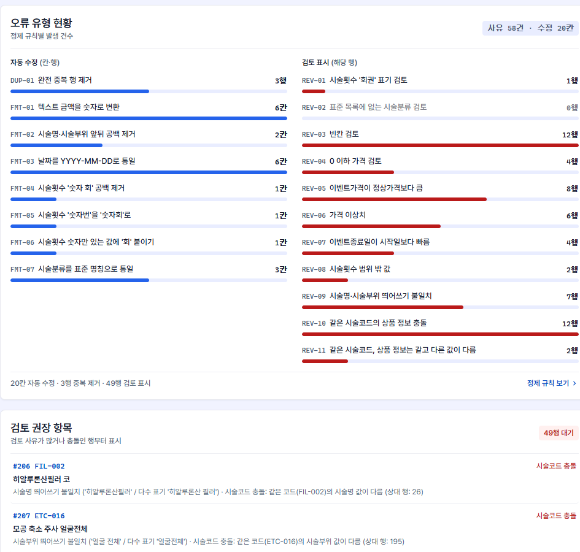
- 오류 유형 현황 — 규칙마다 몇 칸(행)에 적용됐는지 막대로 보여 줍니다.
- 검토 권장 항목 — 충돌이거나 검토 사유가 많은 행부터 5개를 보여 줍니다. 항목을 누르면 「데이터 검증」 화면의 해당 행 상세로 이동합니다. 검토 항목 확인 (49행) 을 누르면 검토 필요 행만 걸러서 보여 줍니다.
- 처리 상세 내역 — 수정·검토·삭제가 일어난 행 목록. 위쪽 탭(전체 처리 / 자동 수정 / 검토 필요 / 중복 제거)으로 거르고, 이전 다음 으로 페이지를 넘깁니다. 상세 를 누르면 그 행으로 이동합니다.
[다시 실행해 결과 비교] 버튼
파일 이름 줄 오른쪽의 다시 실행해 결과 비교 를 누르면 같은 파일을 한 번 더 읽어 정제한 뒤 결과를 비교합니다.
«같은 파일을 다시 읽어 한 번 더 정제했습니다. 정리본, 검토 사유, 변경 기록이 모두 이전 결과와 같습니다.»
«같은 결과가 나온다»는 흔들리지 않는다는 뜻이지, 정답이 맞다는 뜻은 아닙니다.
7데이터 검증 화면 사용하기
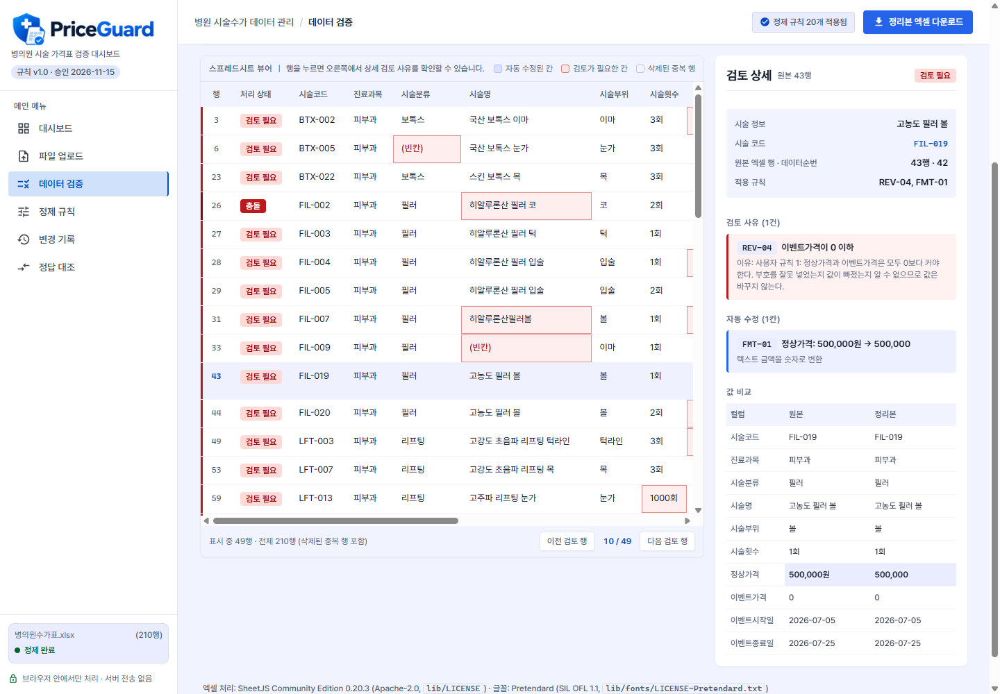
표에서 색 읽기
| 모양 | 뜻 |
|---|---|
| 파란 칸 + 아래 작은 취소선 글자 | 자동 수정 된 칸. 취소선 글자가 원래 값입니다 (예: 500,000 아래 |
| 빨간 테두리 칸 | 검토 필요 칸. (빈칸)도 빨간 글자로 보입니다. |
| 왼쪽 빨간 줄 + «검토 필요» / «충돌» 표시 | 검토가 필요한 행 / 같은 코드 충돌 행 |
| 회색 취소선 행 · «삭제됨» | 완전 중복이라 삭제된 행 (정리본에는 없습니다) |
필터와 검색
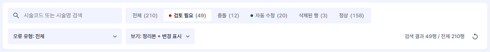
- 검색 — 시술코드나 시술명으로 찾습니다.
- 상태 탭 — 전체 / 검토 필요 / 충돌 / 자동 수정 / 삭제된 행 / 정상
- 오류 유형 — 규칙 하나를 골라 그 규칙에 해당하는 행만 봅니다 (예: REV-06 가격 이상치).
- 보기 — «정리본 + 변경 표시»(기본) / «원본 값» / «정리본 값»
- 오른쪽 ↺ 버튼 — 필터를 처음 상태로 되돌립니다.
상세 패널 열기
- 표에서 행을 누릅니다.
- «검토 상세»에서 시술 정보 · 시술 코드 · 원본 엑셀 행 · 적용 규칙을 봅니다.
- 검토 사유(규칙 ID + 이유)와 자동 수정(바뀌기 전 → 바뀐 뒤)을 확인합니다.
- 맨 아래 값 비교 표에서 10개 칸의 원본과 정리본을 나란히 봅니다. 바뀐 칸은 파랗게 표시됩니다.
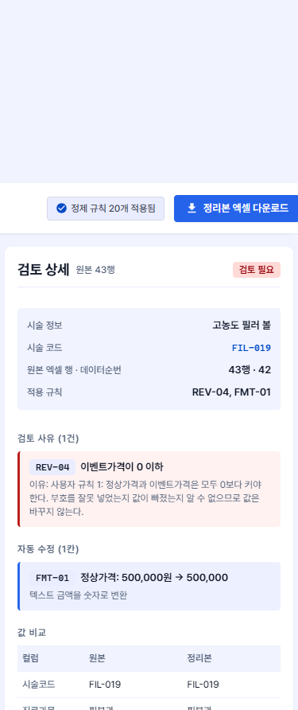
이전 / 다음 검토 행
표 아래 이전 검토 행 다음 검토 행 으로 검토가 필요한 행만 차례로 넘겨 봅니다. 가운데 숫자(예: 10 / 49)는 지금 위치입니다.
↑ 맨 위로8정제 규칙 이해하기
| 처리 방식 | 규칙 수 |
|---|---|
| 자동 수정 | 8 |
| 검토 표시 | 11 |
| 그대로 유지 | 1 |
| 합계 | 20 |
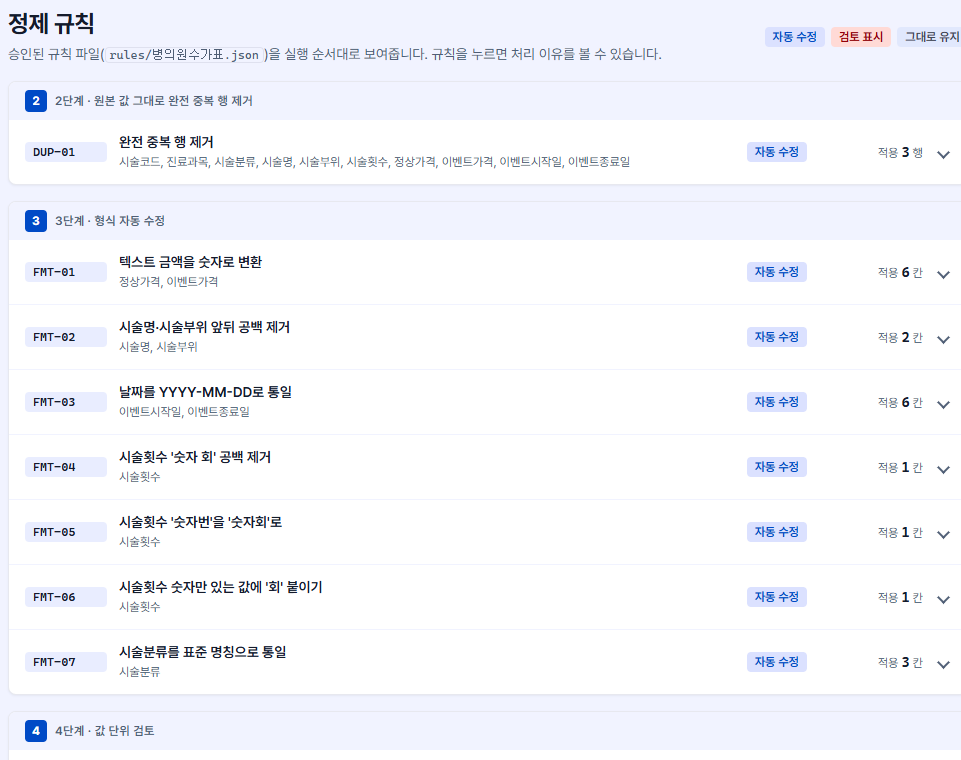
규칙의 이유 · 판단 기준 보기
규칙 줄을 누르면 펼쳐집니다. 처리 방식 · 적용 컬럼 · 처리 이유 · 판단 기준 · 진단 예상 · 실제 적용을 볼 수 있습니다.
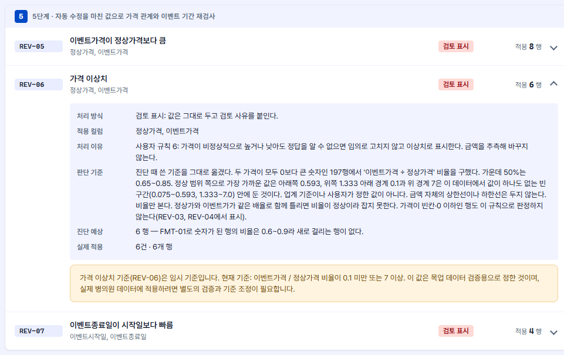
이 화면은 «보기 전용»입니다. 규칙을 바꾸려면 서비스 운영자가 규칙 파일을 고쳐서 다시 배포해야 합니다.
규칙 20개 한눈에
| ID | 이름 | 처리 |
|---|---|---|
DUP-01 | 완전 중복 행 제거 | 자동 수정 |
FMT-01 | 텍스트 금액을 숫자로 변환 | 자동 수정 |
FMT-02 | 시술명·시술부위 앞뒤 공백 제거 | 자동 수정 |
FMT-03 | 날짜를 YYYY-MM-DD로 통일 | 자동 수정 |
FMT-04 | 시술횟수 '숫자 회' 공백 제거 | 자동 수정 |
FMT-05 | 시술횟수 '숫자번'을 '숫자회'로 | 자동 수정 |
FMT-06 | 시술횟수 숫자만 있는 값에 '회' 붙이기 | 자동 수정 |
FMT-07 | 시술분류를 표준 명칭으로 통일 | 자동 수정 |
REV-01 | 시술횟수 '회권' 표기 검토 | 검토 표시 |
REV-02 | 표준 목록에 없는 시술분류 검토 | 검토 표시 |
REV-03 | 빈칸 검토 | 검토 표시 |
REV-04 | 0 이하 가격 검토 | 검토 표시 |
REV-05 | 이벤트가격이 정상가격보다 큼 | 검토 표시 |
REV-06 | 가격 이상치 (임시 기준) | 검토 표시 |
REV-07 | 이벤트종료일이 시작일보다 빠름 | 검토 표시 |
REV-08 | 시술횟수 범위 밖 값 (1~10회 밖) | 검토 표시 |
REV-09 | 시술명·시술부위 띄어쓰기 불일치 | 검토 표시 |
REV-10 | 같은 시술코드의 상품 정보 충돌 | 검토 표시 충돌 |
REV-11 | 같은 시술코드, 상품 정보는 같고 다른 값이 다름 | 검토 표시 |
KEEP-01 | 다른 시술코드는 병합하지 않음 | 그대로 유지 |
시술분류의 표준 이름(FMT-07 · REV-02 기준): 필러 · 스킨부스터 · 지방흡입 · 보톡스 · 리프팅 · 레이저 시술 · 피부관리 · 눈성형 · 기타 미용 시술
↑ 맨 위로9변경 기록 확인하기
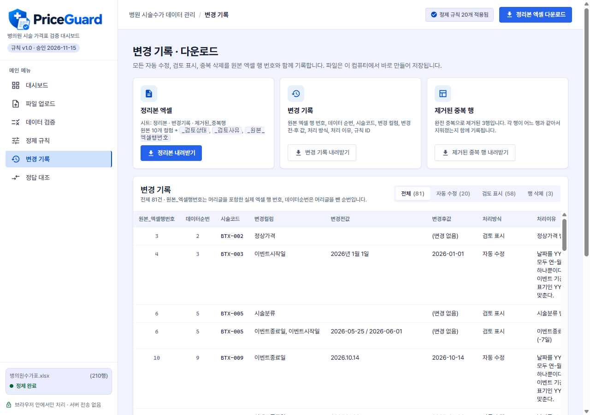
표의 칸
| 칸 | 알 수 있는 것 |
|---|---|
원본_엑셀행번호 | 처음 올린 엑셀의 실제 행 번호 (머리글이 1행) |
데이터순번 | 머리글을 뺀 순번 (= 원본_엑셀행번호 − 1) |
시술코드 | 어떤 시술인지 |
변경컬럼 | 어느 칸인지. 행 삭제는 «(행 전체)» |
변경전값 · 변경후값 | 무엇이 무엇으로 바뀌었는지. 검토 표시는 변경후값이 «(변경 없음)», 행 삭제는 «(삭제)» |
처리방식 | 자동 수정 / 검토 표시 / 자동 수정(행 삭제) |
처리이유 | 왜 고쳤는지, 또는 검토가 필요한 이유 |
규칙ID | 적용된 규칙 (⑧의 표에서 찾을 수 있습니다) |
필터
표 오른쪽 위 탭으로 전체 / 자동 수정 / 검토 표시 / 행 삭제만 골라 봅니다. (목업 예시: 전체 81 · 자동 수정 20 · 검토 표시 58 · 행 삭제 3)
맨 아래 «제거된 중복 행» 표에는 지운 행과, 그 대신 남긴 행의 번호가 나옵니다.
↑ 맨 위로10정리본 다운로드 · 다시 올리기
내려받을 수 있는 파일 3가지 (모두 엑셀 .xlsx)
| 파일 | 버튼 위치 | 파일 이름 예 | 내용 |
|---|---|---|---|
| 정리본 | 위쪽 정리본 엑셀 다운로드, 대시보드 정리본 다운로드 (.xlsx), 데이터 검증 정리본 다운로드, 변경 기록 정리본 내려받기 | 병의원수가표_정리본_2026-11-15.xlsx | 시트 3개: 정리본 · 변경기록 · 제거된_중복행 |
| 변경 기록 | 대시보드 변경 기록 다운로드, 변경 기록 변경 기록 내려받기 | …_변경기록_날짜.xlsx | ⑨의 표와 같은 내용 |
| 제거된 중복 행 | 변경 기록 제거된 중복 행 내려받기 | …_제거된중복행_날짜.xlsx | 지운 행과 남긴 행 번호 |
파일 이름은 «올린 파일 이름_종류_오늘 날짜.xlsx»로 만들어지고, 브라우저의 다운로드 폴더에 저장됩니다. 원본 파일은 바뀌지 않습니다.
정리본에 더해지는 칸
| 칸 | 내용 |
|---|---|
_검토상태 | 정상 / 검토 필요 / 충돌 |
_검토사유 | 규칙 ID와 이유. 여러 개면 ;로 이어집니다. 예: [REV-04] 정상가격이 0 이하; [REV-05] 이벤트가격이 정상가격보다 큼 |
_원본_엑셀행번호 | 처음 올린 엑셀의 행 번호 |
검토한 뒤 다시 올리기
- 정리본을 엑셀로 열어
_검토상태가 «검토 필요» · «충돌»인 행을 확인하고 고칩니다. - 첫 번째 시트(정리본)와
_원본_엑셀행번호칸은 그대로 둔 채 .xlsx로 저장합니다. - PriceGuard의 「파일 업로드」에 다시 올립니다.
«정리본 파일입니다. "_원본_엑셀행번호" 컬럼의 원본 행 번호 ○개를 이어받아, 변경 기록과 검토 사유에 처음 원본의 행 번호를 씁니다.» — 변경 기록과 검토 사유가 처음 원본의 행 번호로 이어집니다. (시트가 3개라 «첫 번째 시트("정리본")만 검사합니다» 안내도 함께 나옵니다.)
- 정리본에 행을 새로 더하면 그 행에는 원본 행 번호가 없어서, 그 파일의 행 번호를 씁니다(화면에 안내가 나옵니다).
- 고치지 않은 값은 다시 올려도 같은 검토 사유가 나옵니다.
정리본을 그대로 다시 올렸을 때와 행 순서를 바꿔 올렸을 때 행 번호가 유지되는 것은 확인했습니다. 사람이 값을 고친 정리본으로는 직접 시험하지 않았습니다.
11정답 대조 (선택 기능)
«정답 CSV»는 «이 가격표가 원래 이랬어야 한다»를 담은 기준 파일입니다. 정리 결과가 얼마나 맞는지 재고 싶을 때 씁니다. 정답 파일이 없다면 이 단계는 건너뛰어도 됩니다.
사용 방법
- 먼저 엑셀을 올려 정리본을 만듭니다 (⑤). 정리본이 없으면 «먼저 엑셀 파일을 올려 정리본을 만들어 주세요.»가 나옵니다.
- 왼쪽 메뉴에서 정답 대조를 누릅니다.
- «기준 정답 (CSV)» 상자의 파일 선택 을 눌러 정답
.csv를 고릅니다.
정답 CSV는 필수 컬럼 10개와 같은 이름의 머리글이 있어야 합니다. 한글 인코딩은 UTF-8과 CP949(한글 Windows 엑셀의 CSV) 모두 읽습니다.
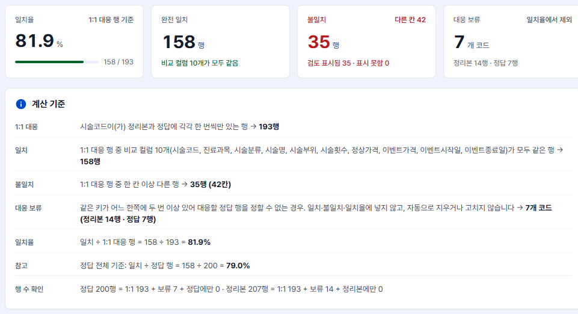
일치율 계산 기준
| 용어 | 뜻 | 목업 예시 |
|---|---|---|
| 1:1 대응 | 시술코드(또는 원본 행 번호)가 정리본과 정답에 각각 한 번씩만 있는 행 | 193행 |
| 일치 | 1:1 대응 행 중 10개 칸이 모두 같은 행 | 158행 |
| 불일치 | 1:1 대응 행 중 한 칸 이상 다른 행 | 35행 |
| 대응 보류 | 같은 키가 어느 한쪽에 두 번 이상 있어 짝을 정할 수 없는 경우 | 7개 코드 (정리본 14행) |
| 일치율 | 일치 ÷ 1:1 대응 행 | 81.9% |
대응 보류란? — 왜 임의로 연결하지 않나
같은 시술코드가 정리본에 두 행 있으면, 둘 중 어느 행을 정답과 비교해야 하는지 프로그램이 알 수 없습니다. 첫 번째 행을 아무렇게나 골라 비교하면 실제보다 «일치»가 많게 셀 수 있습니다. 그래서 PriceGuard는 짝을 고르지 않고 «대응 보류»로 따로 세며, 일치율 계산에서 뺍니다. 대응 보류 행은 지우거나 고치지 않습니다.
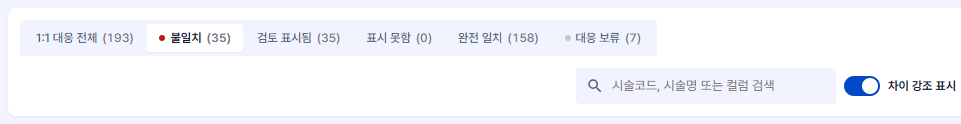
- 검토 표시됨 — 정답과 다른 행 중 PriceGuard가 이미 «검토 필요»로 표시한 행
- 표시 못함 — 정답과 다른데 PriceGuard가 표시하지 못한 행 (정리기가 놓친 차이)
- 대응 보류 탭 — 같은 코드에 속한 정리본 행과 정답 행을 모두 함께 보여 줍니다.
정답 파일은 이 브라우저에서만 읽고 저장하거나 보내지 않습니다. 새 엑셀을 올리면 대조 결과는 지워집니다.
12내 파일이 밖으로 나가지 않는 이유
인터넷(Vercel)에서 내려받는 것
PriceGuard 화면을 그리는 프로그램 파일입니다. 누구에게나 같은 파일입니다.
- 화면 파일 (index.html, style.css, app.js, clean.js)
- 엑셀 처리 도구 (SheetJS) · 글꼴 · 로고
- 정제 규칙 파일 (
rules/병의원수가표.json)
내 브라우저 안에서만 처리하는 것
내가 고른 엑셀 · 정답 CSV의 내용입니다.
- 파일 읽기, 정제, 검토 표시
- 정리본 · 변경 기록 엑셀 만들기 (내 컴퓨터에서 바로 저장)
현재 구현에는 업로드한 파일 내용을 서버로 보내는 기능이 없습니다.
직접 확인하는 방법 (Chrome 기준, 1분)
- PriceGuard 화면에서 F12 를 누릅니다. 개발자 도구가 열립니다.
- 위쪽 탭에서 Network(네트워크)를 누르고, 🚫 모양 버튼으로 기록을 지웁니다.
- 엑셀 파일을 올리고, 정리본을 내려받아 봅니다.
- 새로 생긴 줄을 봅니다. 외부 주소로 가는 요청이 없고, 파일을 보내는(POST) 요청이 없으면 내용이 밖으로 나가지 않은 것입니다.
페이지를 처음 열거나 새로 고칠 때는 위 «인터넷에서 내려받는 것»들이 priceguard-cjy3363-9965.vercel.app 주소의 GET 요청으로 보입니다. 이것은 화면을 받아 오는 요청입니다. 2026-11-15 확인 때는 엑셀을 올린 뒤에 외부 주소 요청과 POST 요청이 0건이었습니다.
이 설명은 현재 PriceGuard 코드와 2026-11-15 확인 결과에 대한 것입니다. 사용하는 컴퓨터 · 브라우저 확장 프로그램 · 회사 네트워크 같은 환경까지 보장하지는 않습니다. 민감한 실제 데이터를 다룰 때는 소속 기관의 보안 규정을 먼저 따르세요.
13자주 발생하는 문제
화면 맨 위 빨간 상자에 나온 문구를 그대로 복사해 두면 문제를 찾기 쉽습니다.
| 상황 / 화면 문구 | 원인 | 해 볼 것 |
|---|---|---|
| «"파일이름"은(는) 지원하지 않는 파일 형식입니다. 엑셀 파일(.xlsx, .xls, .xlsm)만 올릴 수 있습니다.» | CSV 등 다른 형식 | 엑셀에서 «다른 이름으로 저장 → Excel 통합 문서(.xlsx)»로 저장해 다시 올립니다. |
| «파일을 읽지 못했습니다: 필수 컬럼이 없습니다: … (머리글 1행 기준)» | 필수 컬럼 이름이 다르거나 빠짐, 또는 머리글이 1행이 아님 | ②의 10개 이름과 똑같은지, 머리글이 1행인지 확인합니다. 문구에 나온 컬럼이 빠진 컬럼입니다. |
| 오른쪽 위 배지가 «규칙 파일 필요», 안내 «규칙 파일을 자동으로 불러오지 못했습니다.» / 올릴 때 «규칙 파일이 아직 준비되지 않았습니다. 규칙 파일을 먼저 불러와 주세요.» | 규칙 파일을 받아 오지 못함 | 인터넷 연결을 확인하고 새로 고칩니다. 내 컴퓨터에서 index.html을 더블클릭해 연 경우는 부록 A의 «더블클릭으로 열었을 때»를 보세요. |
| 데이터가 첫 번째 시트가 아닌 곳에 있음 | 첫 번째 시트만 검사 | 엑셀에서 데이터가 있는 시트를 맨 앞으로 옮겨 저장합니다. 첫 시트가 비어 있으면 «시트 "…"이(가) 비어 있습니다.»가 나옵니다. |
| 정제 후에도 «검토 필요»가 남아 있음 | 정상 동작입니다. 정답을 알 수 없는 값은 추측해서 바꾸지 않습니다. | ⑦에서 사유를 확인하고, ⑩처럼 정리본에서 고친 뒤 다시 올립니다. |
| 정답 대조: «정답 파일은 CSV(.csv)만 선택할 수 있습니다.» | CSV가 아닌 파일 | 정답 파일을 CSV로 저장해 고릅니다. |
| 정답 대조: «정답 파일에 "시술코드" 컬럼이나 원본 행 번호 컬럼이 없어 행을 맞출 수 없습니다.» / «정답 파일에서 비교할 컬럼을 찾지 못했습니다. 머리글을 확인해 주세요.» | 정답 CSV의 머리글이 다름 | 정답 CSV 1행에 필수 컬럼 이름이 있는지 확인합니다. |
| 다운로드 버튼이 흐리게 꺼져 있음 | 아직 파일을 올리지 않음 | ⑤를 먼저 합니다. |
| 다운로드가 안 됨 / «파일을 만들지 못했습니다: …» | 브라우저가 다운로드를 막았을 수 있음 미검증 | 브라우저의 다운로드 허용 설정과 다운로드 폴더를 확인합니다. 문구가 나오면 그대로 복사해 문의합니다. |
| 바뀐 내용이 안 보이고 예전 화면 그대로임 | 브라우저가 예전 파일을 기억함 | Ctrl+Shift+R (Mac: ⌘+Shift+R)로 새로 고칩니다. |
| 큰 파일에서 화면이 느리거나 멈춤 | 모든 처리를 브라우저에서 함 미검증 | 어느 크기부터 느려지는지 시험하지 않았습니다(시험한 파일은 210행). 파일을 나눠 올리면 나뉜 파일 사이의 중복·충돌은 찾지 못하니 주의하세요. |
A부록 A. 내 컴퓨터에서 실행하기
인터넷 주소를 쓸 수 없을 때(예: 회사 규정)만 따라 하세요. Windows 기준이며, 2026-11-15에 Windows + Python 3.13 + Chrome으로 아래 순서를 실제로 따라 해 확인했습니다.
Mac에서는 직접 시험하지 않았습니다. Mac은 명령의 python을 python3로 바꿔야 할 수 있습니다.
- GitHub 저장소가 공개인지 확인 — github.com/cjy3363-art/priceguard 가 로그인 없이 열리면 공개입니다. 2026-11-15 기준 공개입니다. 열리지 않으면(비공개로 바뀐 경우) ZIP을 받을 수 없으니 운영자에게 파일을 받으세요.
- ZIP 받기 — 저장소 페이지의 초록색 <> Code → Download ZIP
- 압축 풀기 — 받은
priceguard-main.zip에 마우스 오른쪽 → 모두 압축 풀기 → 압축 풀기. 압축을 반드시 풀어야 합니다. deploy폴더 찾기 — 실행할 파일은deploy폴더 안에 있습니다.📁 priceguard-main 📁 deploy ← 여기서 실행합니다 📄 index.html 📄 app.js · clean.js · style.css · vercel.json 📁 lib · rules · assets 📁 scripts (배포 폴더를 만드는 도구 · 쓰지 않음) 📄 .gitignore- Python 설치 확인 — Windows 키 →
cmd→ Enter. 검은 창에 아래를 붙여 넣고 Enter.python --versionPython 3.으로 시작하면 다음 단계로. 없으면 python.org/downloads에서 내려받아 설치하고, 첫 화면 맨 아래 Add python.exe to PATH에 꼭 체크한 뒤 Install Now. 설치 후에는 검은 창을 닫고 새로 엽니다. 설치 절차는 이번에 다시 설치해 보지 않음 deploy폴더에서 검은 창 열기 — 탐색기로deploy폴더를 열고(index.html이 보이는 곳), 위쪽 주소 줄을 한 번 클릭한 뒤cmd입력 → Enter.- 로컬 서버 실행 — 아래 명령을 붙여 넣고 Enter.
python -m http.server 8000 --bind 127.0.0.1이렇게 나오면 성공Serving HTTP on 127.0.0.1 port 8000 (http://127.0.0.1:8000/) ...가 뜨고 커서가 깜빡입니다. 검은 창은 쓰는 동안 닫지 마세요.127.0.0.1은 내 컴퓨터에서만 열린다는 뜻입니다. - 브라우저에서 접속 — Chrome 주소 줄에 아래를 입력합니다. (https가 아니라 http)
온라인과 같은 PriceGuard 「파일 업로드」 화면과 «정제 규칙 20개 준비됨»이 보이면 성공입니다. 사용법은 ③~⑬과 같습니다.http://127.0.0.1:8000 - 사용 종료 — 검은 창을 클릭하고 Ctrl+C. 서버가 멈추면 검은 창과 브라우저 탭을 닫습니다. 다음에는 6~8번만 다시 하면 됩니다.
부록 A에서 막힐 때
| 상황 | 해 볼 것 |
|---|---|
| «'python'은(는) 내부 또는 외부 명령… 아닙니다» | PATH 체크가 빠졌거나 설치 전에 연 검은 창입니다. 검은 창을 새로 열거나, python 대신 py로 실행해 봅니다: py -m http.server 8000 --bind 127.0.0.1 |
python을 치면 Microsoft Store가 열림 | 파이썬이 설치되지 않았다는 안내입니다. 5번대로 설치합니다. |
| «Address already in use» / 8000번 사용 중 | 명령의 8000을 8001로 바꾸고, 주소도 http://127.0.0.1:8001로 엽니다. |
| «사이트에 연결할 수 없음» | 검은 창이 닫혔거나 서버가 꺼졌습니다 → 6·7번 다시. 주소를 https로 쳤다면 http로. |
| 목록이 보이거나 «404» | deploy가 아닌 폴더(예: priceguard-main)에서 서버를 켰습니다. Ctrl+C로 끄고 6번부터. |
더블클릭으로 열었을 때 (주소가 file:///…) | 브라우저 보안 때문에 규칙 파일을 자동으로 못 읽어 «규칙 파일을 자동으로 불러오지 못했습니다.» 상자가 나옵니다. 상자의 규칙 파일 선택 으로 deploy/rules/병의원수가표.json을 고르면 쓸 수 있습니다(Windows Chrome에서 확인). 가능하면 위의 서버 방식을 쓰세요. |
B부록 B. 용어 풀이
| 용어 | 쉽게 말하면 |
|---|---|
| 자동 수정 | 결과가 확실한 형식만 PriceGuard가 고친 것. 예: 500,000원 → 500000 |
| 검토 필요 | 틀린 것 같지만 정답을 몰라서 값은 그대로 두고 «사람이 봐 주세요»라고 표시한 것 |
| 충돌 | 같은 시술코드인데 내용이 다른 행들. 어느 쪽이 맞는지 몰라 둘 다 남겨 둠 |
| 중복 제거 | 10개 칸이 완전히 같은 행은 먼저 나온 하나만 남기고 지운 것 |
| 정제 규칙 | 무엇을 어떻게 검사하고 고칠지 미리 정해 둔 약속 20개 |
| 변경 기록 | 어느 행의 어느 칸이 왜, 무엇에서 무엇으로 바뀌었는지(또는 왜 검토가 필요한지) 적은 목록 |
| 원본 행 번호 | 처음 올린 엑셀에서 그 행이 몇 번째 줄이었는지 (머리글이 1행). 정리본을 다시 올려도 이 번호를 이어서 씀 |
| 정답 대조 | «원래 이랬어야 하는» 정답 파일과 정리본을 비교해 얼마나 맞는지 재는 기능 (선택) |
| 대응 보류 | 같은 코드가 여러 번 있어 정답의 어느 행과 짝지을지 정할 수 없어서, 일부러 비교하지 않고 따로 세어 둔 것 |
| 다시 실행해 결과 비교 | 같은 파일을 한 번 더 정제해서 결과가 똑같이 나오는지 확인하는 버튼. «흔들리지 않는다»는 뜻이지 «정답이다»는 뜻은 아님 |